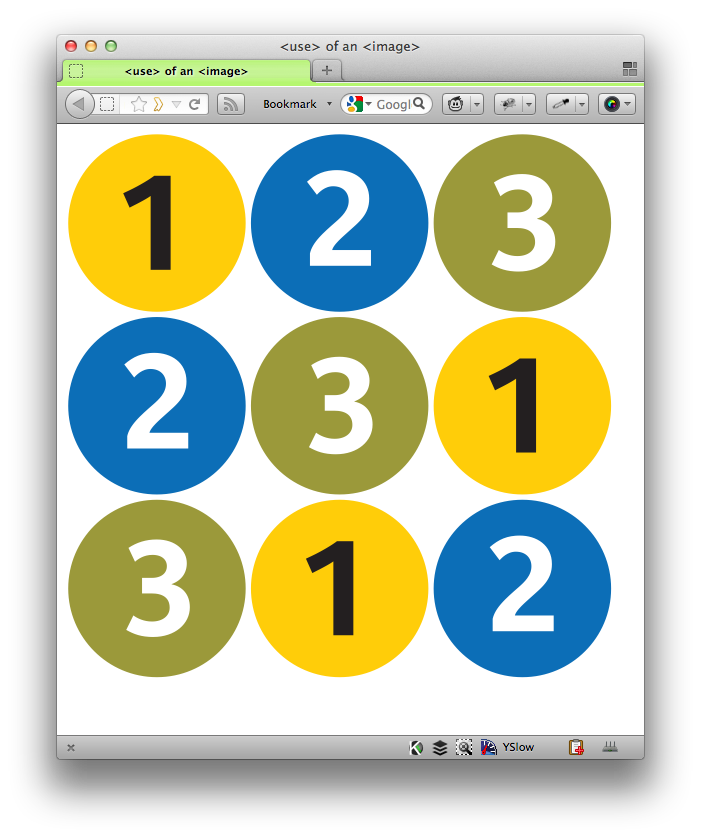
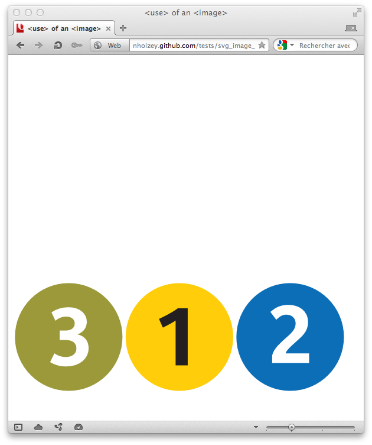

FIXED!
As Erik "Mr SVG" Dahlström told me, this bug has already been fixed, and will maybe be included in Opera 12:
@nhoizey @karlpro @JeremiePat confirmed, it's been fixed for quite some time in internal builds though, will hopefully make it into o12.
— Erik Dahlström (@erikdahlstrom) Juin 7, 201214/06/2012 update: Opera 12.0 is released, and includes the fix!
This page loads 3 SVG images in an inline SVG element with the <image> tag, and these images are used 3 times each with <use> tags.
In Firefox, the 9 images are shown.
In Chrome, no image is shown, but in Chrome enhanced with SVG Web (with this version of the test page), the 9 images are shown.
In Opera, the last <use> of each <image> is the only one shown. Even with a "raw" SVG instead of a HTML5 page with inlined SVG.
Please comment in this issue!
| Browser | OS | OK / KO | Screenshot |
|---|---|---|---|
| Firefox 12.0 | Mac OS X 10.7.4 | OK |  |
| Chrome 21.0.1163.0 dev | Mac OS X 10.7.4 | KO | |
| Chrome 21.0.1163.0 dev with SVG Web | Mac OS X 10.7.4 | OK | |
| Opera 11.64 & 12.00 beta | Mac OS X 10.7.4 | KO |  |
{kind=link}